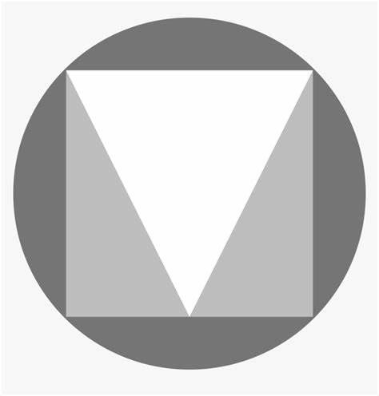
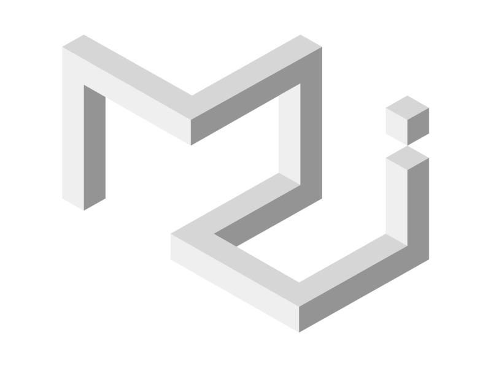

Material UI


Material Design
Material UI
Install
npm install @mui/material @emotion/react @emotion/styled
yarn add @mui/material @emotion/react @emotion/styled
and....use

icons
typography
customization
standard properties & sx
customization
extended sx
customization
Theme
customization
create new component
Advantages
- Tons of ready components
- Wide range of features/animations
- Full documentation
Extensive Library